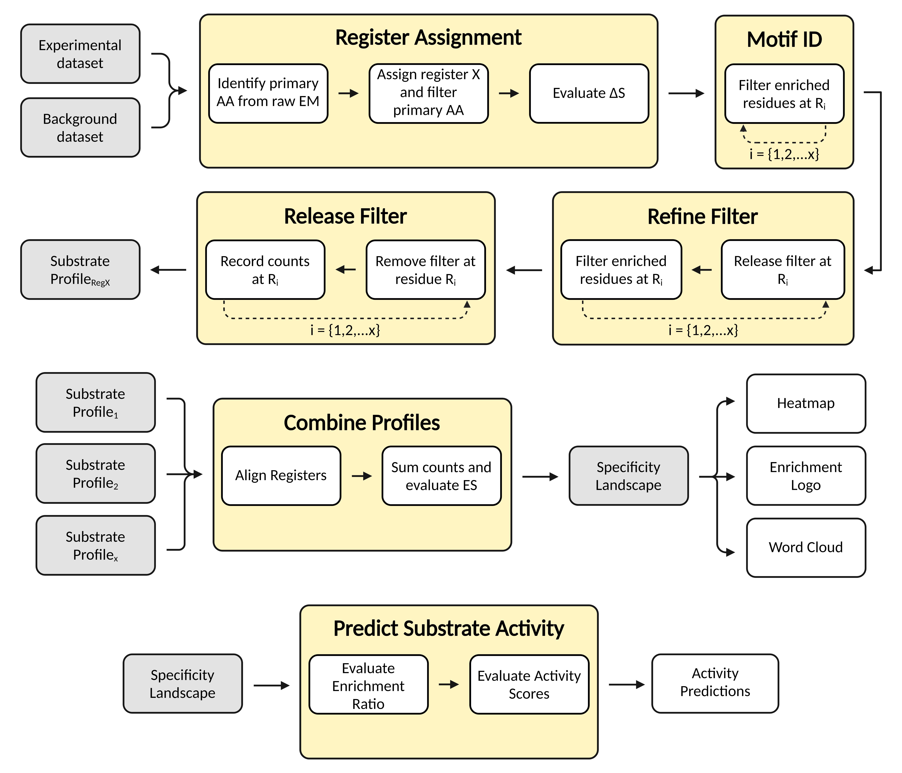

- Evaluate and extract protein sequences from FASTQ or FASTA files generated by sequencing methods such as NGS.
- Evaluate amino acid (AA) enrichment in an experimental (Exp) dataset relative to a background (Bg) set.
- Process randomized protein substrates and identify recognition sites.
- Combine multiple Substrate Profiles, and evaluate convergence.
- Use the Specificity Landscape to predict relative substrate activity.

Process DNA:
Upload DNA sequences in FASTQ or FASTA format. The protein substrates will be translated, and the prevalence of amino acids in your datasets will be evaluated.
After processing substrate and the count matrices will be available to be downloaded, you can use these files for subsequent analyses.
Filter AA:
To apply a filter to the data,
select which residues will be fixed,
or excluded from a given position in
the sequence.
If you don't know which AAs to fix, then plot raw data by not
applying a filter. This will indicate favorable residues.
Filter Motif:
By applying and filter to a randomized set of substrates, and then evaluating the frequencies of each amino acid in that set, we can determine entropy scores (∆S) at each position in the sequence. This reveals the Recognition Site, or the sites that are important for substrate recognition.
Combine Profiles:
Combine the Registers from multiple Substrate Profiles that were obtained from the Filter Motif analysis.
The user will need to supply 2 or more count matrices, and define
It is recommended to use an experimental count matrix obtained from the Filter Motif analysis.
Predict Activity:
Compare AA count matrices from the experimental and background datasets to build a Prediction Matrix that is used to predict relative substrate activity.
Multiple Registers can be combined and used for the experimental count matrix. This option will combine the provided count matrices with the same methods used by Combine Profiles.
Equations:
By comparing the relative frequency (RF) of finding a given residue in the Experimental and Background datasets, the Enrichment Score (ES) of each residue can be evaluated.
ES = log2(RFAA Exp / RFAA Bg)
The RF of each AA in the Experimental set are used to determine the Positional Entropy (∆S) at each position in the sequence.
∆S = SMax - SShannon = log2(20) - ∑(-RFAA * log2(RFAA))
Accepted File Types:
For the security of your data, all uploaded files must adhere to specified file extensions.
DNA Sequencing Data:
- .fastq,
.fq,
.fastq.gz,
.fq.gz
- .fasta,
.fa,
.fasta.gz,
.fa.gz
Protein Substrates:
- .json
AA Count Matrix:
- .csv
Template Dataset:
To test our program we have provided a downloadable template dataset. This includes data that can be used for the Process DNA and the Filter AA analyses.
The provided FASTQ files consist of randomized substrate DNA that can be evaluated with the Process DNA analysis. We've included the files and figures you can expect to obtain after extracting the protein substrates found in the forward and reverse reads when using the default job parameters. If run correctly, you will find that Glutamine is highly enriched at several positions in the sequence.
To determine which AAs are complementary to Glutamine, use the Filter AA analysis to select Exp substrates that contain Glutamine at a specified position in the sequence. We've provided figures obtained by filtering for Glutamine at R5 with default parameters.